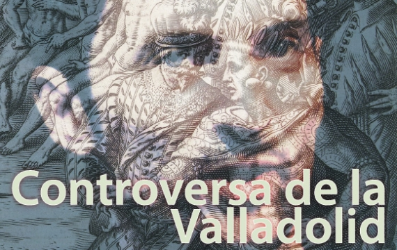
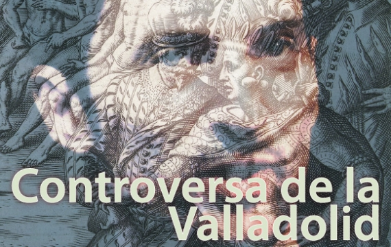
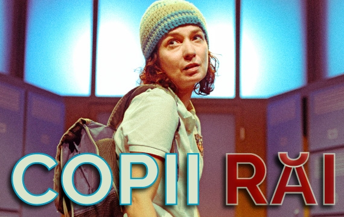
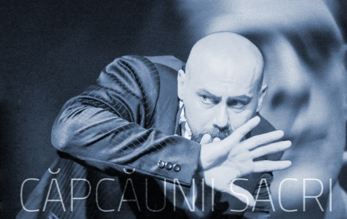
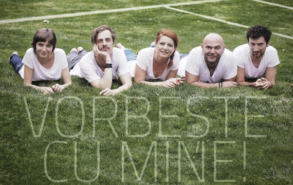
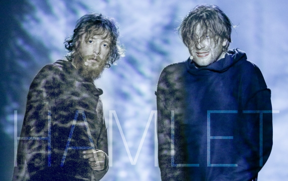
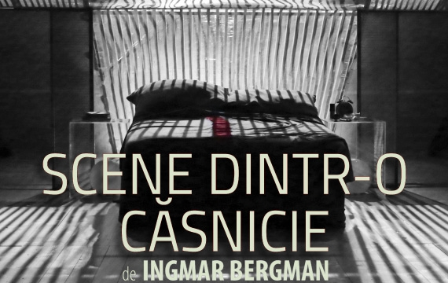
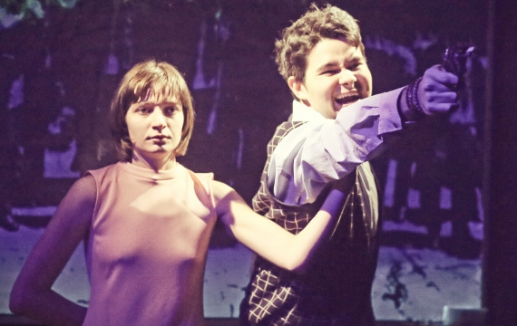

Controversa de la Valladolid
Controversa de la Valladolid de Jean-Claude Carriere traducerea Codruta Popov Data premierei: 04.03.2017 Locatia: Sala 2
We love theater
Inaugurarea Teatrului national ca institutie publica de spectacole dramatice in limba romana s-a petrecut in seara Craciunului din anul 1945, marcata de un spectacol regizat si jucat de celebra actrita Lilly Bulandra.
Controversa de la Valladolid
Controversa de la Valladolid de Jean-Claude Carriere traducerea Codruta Popov Data premierei: 04.03.2017 Locatia: Sala 2
Copii rai
COPII RAI de Mihaela Michailov traducerea in limba franceza Alexandra Lazarescu Data premierei: 01.12.2015.
Capcaunii sacri
CAPCAUNII SACRI dramatizare de Sabin Popescu dupa Capcaunii anonimi de Pascal Bruckner traducerea Muguras Constantinescu Data premierei: 29.06.2016
Vorbeste cu mine
Hamlet
Scene dintr-o casnicie
Ringo is the funniest.
Avioane de hartie
